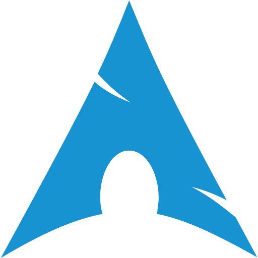
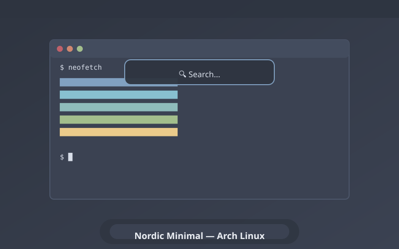
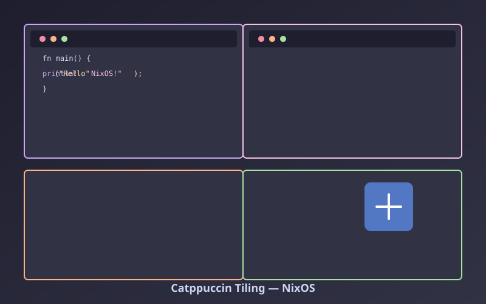
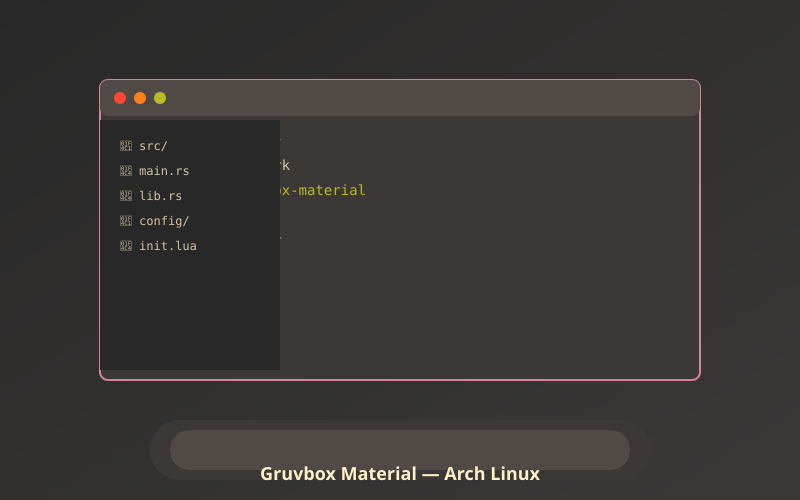
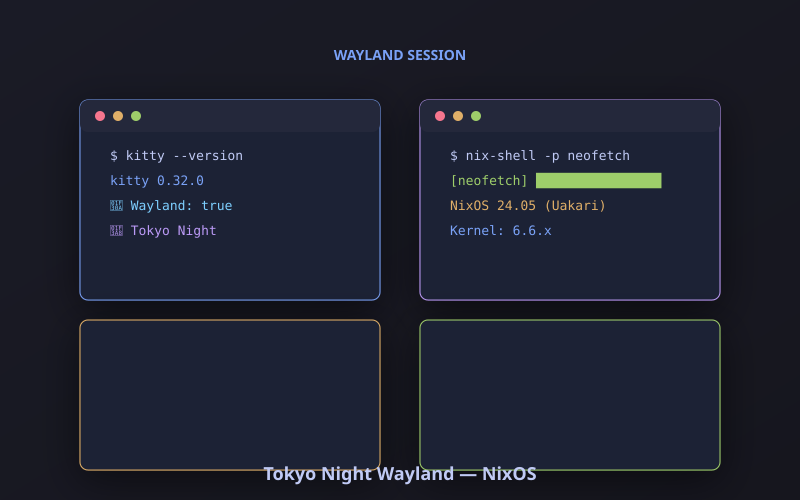

Installation & Setup
Step-by-step installation of KDE Plasma on both Arch Linux and NixOS with optimal configurations
Transform your desktop into a personalized, efficient, and beautiful workspace on Arch Linux and NixOS

Step-by-step installation of KDE Plasma on both Arch Linux and NixOS with optimal configurations
Global themes, color schemes, application styling, and creating cohesive visual identities
KWin scripts, tiling, window rules, virtual desktops, and keyboard-driven workflows
Custom panels, latte dock, system monitoring, application launchers, and productivity widgets
KDE Connect, DBus scripting, systemd services, and declarative configuration management
Dotfile management, home-manager, configuration versioning, and disaster recovery




Official Arch Linux documentation for KDE Plasma installation and configuration
NixOS-specific KDE Plasma configuration with Home Manager examples
Themes, widgets, wallpapers, color schemes, and KWin scripts
Community showcase for desktop customization inspiration
Beautiful pre-made KDE Plasma themes with easy installation scripts
Popular Nord-inspired theme suite for KDE Plasma